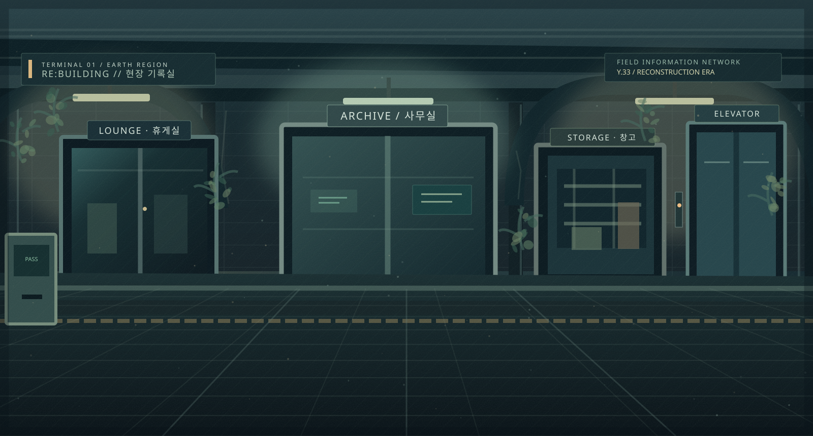

TERMINAL 01 / ARCHIVE ACCESS POINT — YEAR 33
끝난 것은 전쟁이다.
계속되는 것은 일상이다.
짧은 전쟁 이후, 오랜 재난을 지나 다시 움직이기 시작한 지구.
남겨진 기록을 따라 재건의 시대를 탐색한다.
STATION INTERFACE / 반지하 역사 기록 접속점
INTERACTIVE POINTS 04

INTERACTION ENABLEDSELECT AN ACCESS POINT
01 / WORLD다시 움직이는 지구
재건된 도심과 탐사 중인 외곽, 우주 정착지가 함께 존재하는 시대.
02 / DATABASE다섯 갈래의 기록
세계관·설정·지역·집단·인물을 기록 단위로 탐색하는 자료망.
03 / STORIES하나의 세계, 두 개의 시선
장거리 취재의 ARGO NOTE와 도시 재건의 EAST CITY.